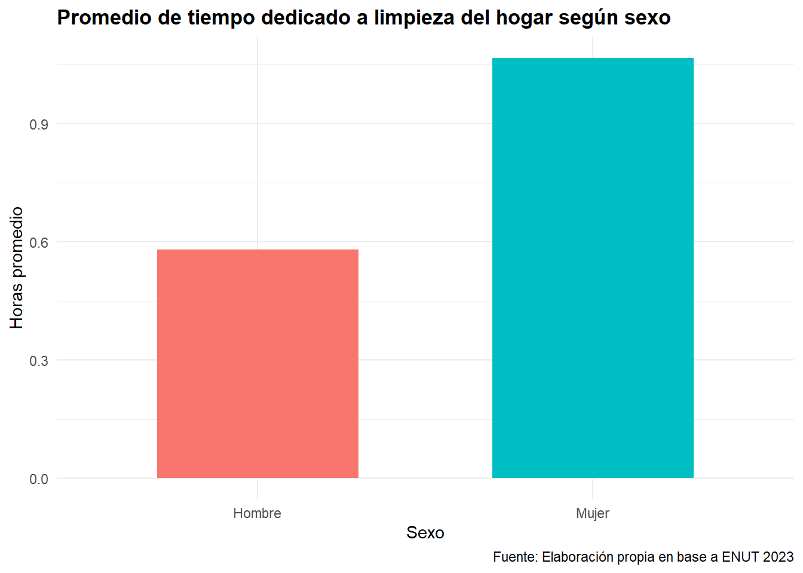
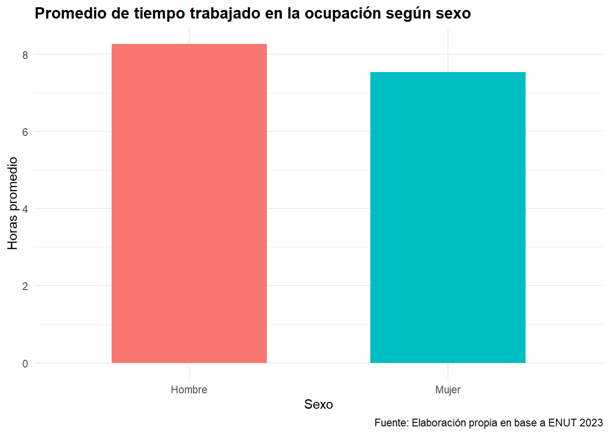
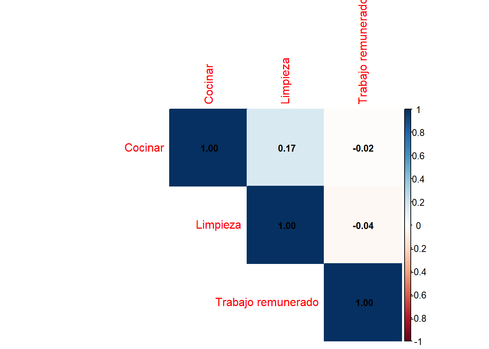
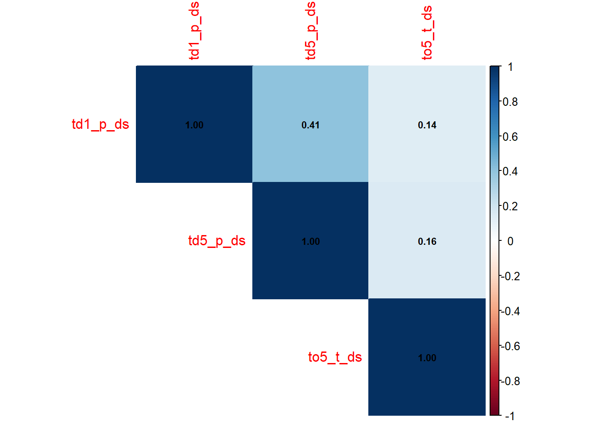
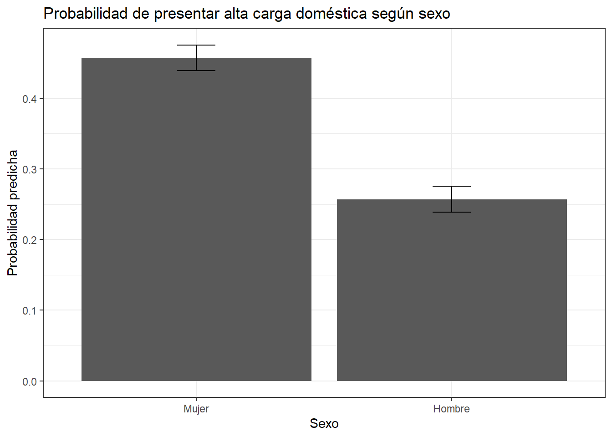

library(pacman)
pacman::p_load(
tidyverse,
sjlabelled,
stargazer,
sjmisc,
summarytools,
kableExtra,
sjPlot,
corrplot,
sessioninfo,
psych,
here,
texreg,
DescTools,
ggeffects
)Tarea_4
Distribución del trabajo doméstico y de cuidados en Chile: análisis a partir del ENUT 2023
Introduccion
Durante las últimas décadas, el mercado laboral chileno ha experimentado transformaciones significativas que han tensionado la estructura cultural del trabajo doméstico no remunerado y, junto con ello, las relaciones de género al interior del hogar y la institución familiar. El aumento sostenido de la participación femenina en el empleo remunerado no ha sido acompañado por una redistribución equitativa de las tareas domésticas y de cuidados, en donde, a pesar de los avances en integración laboral y educativa de las mujeres, diversas investigaciones muestran que ellas continúan asumiendo de manera mayoritaria la responsabilidad del trabajo doméstico no remunerado. Este fenómeno se intensifica cuando mantienen simultáneamente una jornada laboral activa, lo que evidencia la persistencia de patrones culturales tradicionales que organizan la vida doméstica, generando una sobrecarga estructural y una doble presencia entre el ámbito productivo y reproductivo.
Este fenómeno ha sido ampliamente discutido en la literatura a través del concepto de “segunda jornada” (hochschild1989?), donde se muestra que, aun cuando las mujeres se integran al mercado laboral, continúan asumiendo de forma predominante las responsabilidades domésticas y de cuidado al interior del hogar. De este modo, la incorporación femenina al trabajo remunerado no implica necesariamente una redistribución de las tareas domésticas, sino que con frecuencia se traduce en una ampliación de la carga total de trabajo que enfrentan las mujeres, llamado “superwoman”, una mujer que intenta cumplir con su rol profesional, doméstico y maternal (Friedan en amorós2021?). Silvia Órdenes (2025) señala que, incluso cuando las mujeres logran mayores niveles de integración laboral o educativa, esto no se traduce necesariamente en una disminución del tiempo dedicado al trabajo doméstico no remunerado (ordenes2025?).
Bajo este escenario emerge un problema sociológicamente relevante: la persistencia de una distribución desigual del trabajo doméstico y de cuidado, incluso entre mujeres que participan activamente en el mercado laboral, lo que evidencia tensiones entre los cambios en la esfera productiva y la continuidad de estructuras culturales tradicionales que organizan la vida doméstica. En este contexto, el objetivo general del estudio es analizar cómo se distribuye el trabajo doméstico y de cuidado no remunerado entre mujeres activas laboralmente en Chile, considerando dimensiones sociodemográficas, laborales y familiares. Para ello, se utilizará la base de datos ENUT 2023 para explorar asociaciones entre condiciones sociales y patrones de uso del tiempo.
La variable dependiente del estudio corresponde al tiempo dedicado al trabajo doméstico y de cuidado no remunerado. Este tiempo puede verse afectado por diversas variables independientes. Por ejemplo, la presencia de personas dependientes en el hogar —como niños, niñas, personas mayores o personas con discapacidad— tiende a incrementar la demanda de cuidados cotidianos y, por tanto, las horas de trabajo no remunerado. Asimismo, la jornada laboral remunerada puede limitar la disponibilidad de tiempo, generando tensiones entre empleo y responsabilidades domésticas. Por otra parte, el nivel educativo y la condición socioeconómica pueden influir en la posibilidad de externalizar ciertas tareas domésticas mediante servicios remunerados o acceso a redes de apoyo. Del mismo modo, la condición de jefatura de hogar puede aumentar las responsabilidades materiales y organizativas dentro del hogar.
Respecto del ciclo vital, este concepto refiere a la etapa de la trayectoria familiar y personal en que se encuentran las mujeres, por ejemplo: juventud sin hijos, adultez con hijos pequeños, adultez con hijos adolescentes o vejez. Cada una de estas etapas presenta distintas exigencias de cuidado. En particular, los hogares con hijos pequeños suelen demandar más tiempo de trabajo doméstico y de cuidados intensivos, mientras que en etapas posteriores dichas exigencias pueden disminuir o transformarse en cuidados hacia personas mayores dependientes.
Bajo este marco, planteamos la siguiente pregunta de investigación:
¿Cómo se distribuye el trabajo doméstico y de cuidado no remunerado entre mujeres activas laboralmente en Chile, y qué patrones de desigualdad se observan según sus condiciones sociodemográficas y laborales?
El análisis de la distribución del trabajo doméstico no remunerado entre mujeres activas laboralmente se sostiene sobre los conceptos de cuidado, división sexual del trabajo y corresponsabilidad doméstica, los cuales se vinculan al debate sobre desigualdad de género, reproducción social y estructura cultural del hogar. En este sentido, se reconoce que el avance en integración educativa y laboral de las mujeres no ha implicado necesariamente un cambio equivalente en la organización doméstica. Los estudios demuestran cómo, aun en contextos de mayor autonomía económica y capital educativo, las mujeres continúan asumiendo la mayor parte de las tareas domésticas y de cuidado, especialmente cuando conviven con hijos pequeños u otras personas dependientes (ordenes2025?). Esto evidencia la persistencia de patrones culturales que estructuran el hogar bajo lógicas tradicionales de carácter patriarcal, donde la maternidad y la feminización del cuidado se mantienen como componentes centrales de la organización familiar.
Esta realidad encuentra respaldo empírico en los resultados de la Segunda Encuesta Nacional sobre Uso del Tiempo (INE, 2023), que revela que las mujeres dedican más del doble de horas que los hombres al trabajo doméstico y de cuidados no remunerados, pese a su creciente inserción laboral (allendes?). Siguiendo con lo anterior, resulta necesario operacionalizar estos conceptos para su análisis empírico. La ENUT 2023 permite medir la distribución de actividades domésticas, laborales y de cuidado, constituyendo una fuente pertinente para examinar cómo distintas posiciones sociales y condiciones familiares inciden en la distribución del tiempo doméstico entre mujeres con participación laboral activa.
Librerias
Base de datos
rm(list = ls())
options(scipen = 999)
library(tidyverse)
library(haven)
Attaching package: 'haven'The following objects are masked from 'package:sjlabelled':
as_factor, read_sas, read_spss, read_stata, write_sas, zap_labelslibrary(here)
library(DescTools)
enut <- readRDS(here::here("IPO", "Input", "enut2023.RDS"))
enut <- zap_labels(enut)Operacionalización de Variables
proc_data <- enut %>%
mutate(
sexo = case_when(
sexo == 1 ~ "Hombre",
sexo == 2 ~ "Mujer",
TRUE ~ NA_character_
),
td1_t_ds = ifelse(
td1_t_ds %in% c(88,99,999,9999,-1),
NA,
td1_t_ds
),
td5_t_ds = ifelse(
td5_t_ds %in% c(88,99,999,9999,-1),
NA,
td5_t_ds
),
to5_t_ds = ifelse(
to5_t_ds %in% c(88,99,999,9999,-1),
NA,
to5_t_ds
),
bs10 = case_when(
bs10 == 1 ~ "Mucho menos",
bs10 == 2 ~ "Menos",
bs10 == 3 ~ "Igual",
bs10 == 4 ~ "Más",
bs10 == 5 ~ "Mucho más",
TRUE ~ NA_character_
)
)Seleccion de Variables
proc_data <- proc_data %>%
select(
sexo,
td1_t_ds,
td5_t_ds,
to5_t_ds,
bs10
)
names(proc_data)[1] "sexo" "td1_t_ds" "td5_t_ds" "to5_t_ds" "bs10" Descripción de varibles
Se seleccionaron cinco variables de la Encuesta Nacional sobre Uso del Tiempo (ENUT 2023):
sexo: variable nominal que identifica el sexo de la persona entrevistada.
td1_t_ds: variable de razón que mide el tiempo dedicado a cocinar o preparar alimentos en día de semana.
td5_t_ds: variable de razón que mide el tiempo dedicado a limpieza del hogar en día de semana.
to5_t_ds: variable de razón que mide el tiempo trabajado en la ocupación principal en día de semana.
bs10: variable ordinal que mide la percepción subjetiva sobre cuánto trabajo doméstico realiza habitualmente en el hogar.
Tabla descriptiva variable numericas
=================================
Statistic N Mean St. Dev. Min Max
=================================Frecuencia variables categoricas
id="i34v34"
#| echo: FALSE
frq(proc_data$sexo)x <character>
# total N=48020 valid N=48020 mean=1.53 sd=0.50
Value | N | Raw % | Valid % | Cum. %
-----------------------------------------
Hombre | 22609 | 47.08 | 47.08 | 47.08
Mujer | 25411 | 52.92 | 52.92 | 100.00
<NA> | 0 | 0.00 | <NA> | <NA>frq(proc_data$bs10)x <character>
# total N=48020 valid N=25302 mean=2.07 sd=0.62
Value | N | Raw % | Valid % | Cum. %
----------------------------------------------
Igual | 4131 | 8.60 | 16.33 | 16.33
Menos | 15365 | 32.00 | 60.73 | 77.05
Mucho menos | 5806 | 12.09 | 22.95 | 100.00
<NA> | 22718 | 47.31 | <NA> | <NA>Grafico 1 (Tiempo dedicado a la limpieza por sexo)
graf1_data <- proc_data %>%
mutate(
sexo = factor(
sexo,
levels = c("Hombre","Mujer")
),
td5_t_ds = ifelse(td5_t_ds < 0, NA, td5_t_ds),
td5_t_ds = ifelse(td5_t_ds > 24, NA, td5_t_ds)
) %>%
filter(
!is.na(sexo),
!is.na(td5_t_ds)
) %>%
group_by(sexo) %>%
summarise(
promedio = mean(td5_t_ds, na.rm = TRUE)
)
ggplot(graf1_data,
aes(x = sexo,
y = promedio,
fill = sexo)) +
geom_col(width = 0.6) +
labs(
title = "Promedio de tiempo dedicado a limpieza del hogar según sexo",
x = "Sexo",
y = "Horas promedio",
caption = "Fuente: Elaboración propia en base a ENUT 2023"
) +
theme_minimal() +
theme(
legend.position = "none",
plot.title = element_text(face = "bold")
)
Interpretacion Grafico 1.
El gráfico muestra diferencias en el tiempo promedio destinado a la limpieza del hogar según sexo. Las mujeres dedican aproximadamente una hora diaria a estas actividades, mientras que los hombres destinan alrededor de media hora. Aunque la diferencia observada no es extremadamente elevada, sí evidencia una distribución desigual del trabajo doméstico no remunerado. Estos resultados son consistentes con la literatura sobre división sexual del trabajo, que señala que las mujeres continúan asumiendo una mayor proporción de las tareas de mantención cotidiana del hogar, incluso en contextos de creciente participación laboral femenina.
Grafico 2 (Trabajo remunerado)
graf2_data <- proc_data %>%
mutate(
sexo = factor(
sexo,
levels = c("Hombre","Mujer")
),
# limpiar valores inválidos
to5_t_ds = ifelse(to5_t_ds < 0, NA, to5_t_ds),
to5_t_ds = ifelse(to5_t_ds > 24, NA, to5_t_ds)
) %>%
filter(
!is.na(sexo),
!is.na(to5_t_ds)
) %>%
group_by(sexo) %>%
summarise(
promedio = mean(to5_t_ds, na.rm = TRUE)
)
ggplot(graf2_data,
aes(x = sexo,
y = promedio,
fill = sexo)) +
geom_col(width = 0.6) +
labs(
title = "Promedio de tiempo trabajado en la ocupación según sexo",
x = "Sexo",
y = "Horas promedio",
caption = "Fuente: Elaboración propia en base a ENUT 2023"
) +
theme_minimal() +
theme(
legend.position = "none",
plot.title = element_text(face = "bold")
)
Interpretacion Grafico 2.
Se evidencia diferencias en el tiempo promedio destinado al trabajo remunerado según sexo. Los hombres registran jornadas laborales más extensas, alcanzando en promedio poco más de ocho horas diarias, mientras que las mujeres trabajan alrededor de siete horas y media. Esta diferencia sugiere una distribución diferenciada de las responsabilidades productivas y reproductivas, donde los hombres concentran una mayor cantidad de tiempo en el empleo remunerado y las mujeres destinan relativamente más tiempo a actividades domésticas. En consecuencia, la organización del tiempo cotidiano continúa reflejando patrones de género que estructuran de manera distinta la participación en el mercado laboral y en el trabajo doméstico.
Interpretacion general de los resultados obtenidos
Los resultados descriptivos permiten observar que la distribución del tiempo entre trabajo remunerado y trabajo doméstico no remunerado continúa marcada por diferencias de género. En primer lugar, la tabla de estadísticos descriptivos evidencia que las personas encuestadas destinan una cantidad importante de tiempo diario tanto al empleo remunerado como a distintas tareas domésticas. Esto refleja que el uso cotidiano del tiempo combina responsabilidades productivas y reproductivas que muchas veces se superponen, configurando tensiones entre la esfera laboral y la vida doméstica.
En relación con la variable sexo, los resultados sugieren que mujeres y hombres no participan de igual manera en las labores domésticas. El gráfico referido al tiempo promedio dedicado a la limpieza del hogar muestra que las mujeres destinan una mayor cantidad de horas a este tipo de trabajo doméstico no remunerado en comparación con los hombres. Aunque las diferencias observadas no son extremadamente amplias, sí evidencian una tendencia consistente con la literatura sobre división sexual del trabajo, donde las mujeres continúan asumiendo una mayor responsabilidad en las tareas de reproducción cotidiana del hogar. Por otra parte, el gráfico sobre tiempo trabajado en la ocupación principal muestra que los hombres registran jornadas promedio de trabajo remunerado más extensas que las mujeres. Esto permite inferir que la distribución desigual del tiempo no solo se expresa en las labores domésticas, sino también en la organización diferenciada de las responsabilidades productivas y reproductivas entre hombres y mujeres. En este sentido, mientras los hombres concentran una mayor cantidad de horas en el empleo remunerado.
Los resultados descriptivos permiten observar que la distribución del tiempo continúa marcada por diferencias de género. Mientras los hombres dedican una mayor cantidad de horas al trabajo remunerado, las mujeres destinan más tiempo a labores domésticas como la limpieza del hogar. Esta distribución sugiere que las responsabilidades productivas y reproductivas siguen organizándose de manera diferenciada entre hombres y mujeres. Aunque ambos grupos participan simultáneamente en el mercado laboral y en las actividades domésticas, la carga temporal asociada a cada esfera no se distribuye de forma equivalente. En este sentido, los hallazgos son consistentes con la literatura sobre división sexual del trabajo y segunda jornada, que plantea que la incorporación femenina al empleo remunerado no necesariamente ha implicado una redistribución proporcional de las tareas domésticas y de cuidado.
Respecto de la percepción subjetiva sobre cuánto trabajo doméstico se realiza en el hogar, las tablas de frecuencia permiten aproximarse a cómo las personas evalúan la distribución interna de estas tareas. Cuando una proporción relevante declara realizar “más” o “mucho más” trabajo doméstico que otros integrantes del hogar, ello refuerza la idea de una distribución desigual de responsabilidades al interior de las familias, particularmente en actividades de cuidado y mantención cotidiana del hogar. En términos generales, los hallazgos descriptivos dialogan con la literatura revisada en la introducción. La creciente incorporación femenina al trabajo remunerado no necesariamente ha sido acompañada por una redistribución equivalente del trabajo doméstico y de cuidados. Más bien, persisten patrones culturales tradicionales que continúan asignando a las mujeres una mayor responsabilidad sobre las tareas reproductivas y de sostenimiento cotidiano de la vida doméstica.
Asociacion entre variables
Tabla de correlaciones
cor_data <- proc_data %>%
select(
td1_t_ds,
td5_t_ds,
to5_t_ds
)
names(cor_data) <- c(
"Cocinar",
"Limpieza",
"Trabajo remunerado"
)
cor_matrix <- cor(
cor_data,
use = "pairwise.complete.obs"
)
corrplot(
cor_matrix,
method = "color",
type = "upper",
addCoef.col = "black",
number.cex = 0.8
)
Grafico de correlaciones
corrplot(
cor_matrix,
method = "color",
type = "upper",
addCoef.col = "black",
number.cex = 0.7
)
Interpretacion asociacion de variables
La matriz de correlaciones permite observar el grado de asociación existente entre las principales variables relacionadas con el uso del tiempo doméstico y laboral. En términos generales, los resultados muestran asociaciones positivas entre las variables analizadas, aunque con distinta intensidad.
En primer lugar, se observa una correlación moderada entre el tiempo dedicado a cocinar (td1_t_ds) y el tiempo destinado a limpieza del hogar (td5_t_ds) (r = 0.39). Esto sugiere que las personas que dedican más tiempo a tareas de cocina también tienden a invertir más tiempo en labores de limpieza doméstica, evidenciando que distintas actividades reproductivas del hogar suelen acumularse sobre los mismos sujetos. Este resultado es coherente con la literatura sobre división sexual del trabajo, que plantea que las tareas domésticas no remuneradas suelen concentrarse de manera simultánea en determinados integrantes del hogar, particularmente en las mujeres.
Por otra parte, las correlaciones entre el trabajo remunerado (to5_t_ds) y las tareas domésticas presentan valores más bajos. El tiempo trabajado en la ocupación principal se asocia débilmente tanto con cocinar (r = 0.18) como con limpieza del hogar (r = 0.22). Esto indica que, aunque existe cierta relación entre ambas dimensiones del uso del tiempo, las jornadas laborales no necesariamente reducen de manera proporcional las tareas domésticas realizadas. En otras palabras, las responsabilidades reproductivas continúan presentes incluso entre quienes mantienen una participación activa en el empleo remunerado, reforzando la idea de una doble carga laboral.
El gráfico de correlaciones permite visualizar estas asociaciones de manera más clara, mostrando que la relación más fuerte se concentra entre las distintas tareas domésticas, mientras que las asociaciones con el trabajo remunerado son considerablemente más débiles. En conjunto, estos resultados respaldan la hipótesis teórica desarrollada en la introducción, según la cual la incorporación al mercado laboral no implica necesariamente una redistribución equivalente del trabajo doméstico y de cuidados.
Construccion de indice
proc_data <- proc_data %>%
mutate(
indice_domestico =
rowMeans(
cbind(td1_t_ds,
td5_t_ds),
na.rm = TRUE
)
)
summary(proc_data$indice_domestico) Min. 1st Qu. Median Mean 3rd Qu. Max. NA's
0.017 0.333 0.750 0.899 1.125 96.000 26402 Alfa de Croanbach
library(psych)
alpha(
proc_data %>%
select(td1_t_ds, td5_t_ds)
)Number of categories should be increased in order to count frequencies.
Reliability analysis
Call: alpha(x = proc_data %>% select(td1_t_ds, td5_t_ds))
raw_alpha std.alpha G6(smc) average_r S/N ase mean sd median_r
0.29 0.29 0.17 0.17 0.4 0.0064 0.9 1.8 0.17
95% confidence boundaries
lower alpha upper
Feldt 0.28 0.29 0.31
Duhachek 0.28 0.29 0.31
Reliability if an item is dropped:
raw_alpha std.alpha G6(smc) average_r S/N alpha se var.r med.r
td1_t_ds 0.20 0.17 0.028 0.17 0.2 NA 0 0.17
td5_t_ds 0.15 0.17 0.028 0.17 0.2 NA 0 0.17
Item statistics
n raw.r std.r r.cor r.drop mean sd
td1_t_ds 16378 0.83 0.76 0.31 0.17 0.96 2.3
td5_t_ds 18565 0.80 0.76 0.31 0.17 0.95 2.0Interpretacion indice y alfa
Con el objetivo de aproximarse empíricamente a la carga de trabajo doméstico no remunerado, se construyó un índice compuesto a partir de las variables de tiempo dedicado a cocinar y tiempo destinado a limpieza del hogar. Posteriormente, se evaluó la consistencia interna de esta escala mediante el Alfa de Cronbach.
Los resultados muestran un Alfa de Cronbach de aproximadamente 0.56, lo que indica una consistencia interna moderada entre ambas variables. Si bien el valor no alcanza niveles considerados altos, esto puede explicarse debido a que cocinar y limpiar representan dimensiones distintas del trabajo doméstico cotidiano, aun cuando ambas forman parte de las labores reproductivas del hogar. A pesar de ello, la correlación positiva observada entre ambas variables permite justificar analíticamente la construcción del índice, ya que ambas actividades tienden a acumularse conjuntamente en ciertos individuos. De este modo, el índice construido permite aproximarse de manera general a la intensidad del trabajo doméstico no remunerado realizado por las personas encuestadas.
Estos resultados resultan coherentes con la literatura revisada, particularmente con los enfoques sobre división sexual del trabajo y sobrecarga doméstica, donde se plantea que las tareas reproductivas suelen concentrarse de manera simultánea en quienes asumen las principales responsabilidades de cuidado y mantención del hogar.
Seccion 4. Modelos de Regresión
Construcción de variable dependiente dicotómica
proc_data <- proc_data %>%
mutate(
alta_carga_domestica =
ifelse(
indice_domestico >
median(indice_domestico, na.rm = TRUE),
1,
0
)
)Regresion Lineal Multiple
Modelo 1
modelo1 <- lm(
indice_domestico ~ sexo,
data = proc_data
)Modelo 2
modelo2 <- lm(
indice_domestico ~ sexo + to5_t_ds,
data = proc_data
)Modelo 3
modelo3 <- lm(
indice_domestico ~ sexo + to5_t_ds + bs10,
data = proc_data
)Tabla comparativa
screenreg(
list(modelo1, modelo2, modelo3),
custom.model.names = c(
"Modelo 1",
"Modelo 2",
"Modelo 3"
)
)
=======================================================
Modelo 1 Modelo 2 Modelo 3
-------------------------------------------------------
(Intercept) 0.64 *** 0.70 *** 0.85 ***
(0.02) (0.06) (0.09)
sexoMujer 0.39 *** 0.33 *** 0.31 ***
(0.03) (0.05) (0.05)
to5_t_ds -0.01 * -0.01
(0.01) (0.01)
bs10Menos -0.11
(0.07)
bs10Mucho menos -0.32 ***
(0.08)
-------------------------------------------------------
R^2 0.01 0.01 0.01
Adj. R^2 0.01 0.01 0.01
Num. obs. 21618 8088 7104
=======================================================
*** p < 0.001; ** p < 0.01; * p < 0.05Los resultados muestran que el sexo constituye el principal predictor del índice doméstico. En todos los modelos las mujeres presentan niveles significativamente mayores de participación en tareas domésticas que los hombres. El efecto se mantiene incluso al controlar por tiempo de trabajo remunerado y percepción subjetiva del trabajo doméstico. Por su parte, el tiempo destinado al trabajo remunerado presenta una asociación negativa con el índice doméstico, aunque de menor magnitud.
Regresion Logística Binaria
Modelo Logistico
logit1 <- glm(
alta_carga_domestica ~ sexo +
to5_t_ds +
bs10,
family = "binomial",
data = proc_data
)Coeficientes Log-Odds
screenreg(
list(logit1),
custom.model.names = c(
"Modelo Logístico"
)
)
=================================
Modelo Logístico
---------------------------------
(Intercept) -0.17
(0.11)
sexoMujer 0.89 ***
(0.06)
to5_t_ds -0.06 ***
(0.01)
bs10Menos -0.41 ***
(0.06)
bs10Mucho menos -1.09 ***
(0.09)
---------------------------------
AIC 8817.20
BIC 8851.54
Log Likelihood -4403.60
Deviance 8807.20
Num. obs. 7104
=================================
*** p < 0.001; ** p < 0.01; * p < 0.05Odds Ratios
OR <- exp(coef(logit1))
kable(
data.frame(
Variable = c(
"Intercepto",
"Mujer",
"Horas trabajo remunerado",
"Percibe menos trabajo doméstico",
"Percibe mucho menos trabajo doméstico"
),
Odds_Ratio = round(OR,3)
),
caption = "Odds Ratios del modelo logístico"
)| Variable | Odds_Ratio | |
|---|---|---|
| (Intercept) | Intercepto | 0.845 |
| sexoMujer | Mujer | 2.436 |
| to5_t_ds | Horas trabajo remunerado | 0.939 |
| bs10Menos | Percibe menos trabajo doméstico | 0.661 |
| bs10Mucho menos | Percibe mucho menos trabajo doméstico | 0.335 |
Las mujeres poseen aproximadamente 2.4 veces más probabilidades de presentar una alta carga doméstica en comparación con los hombres, manteniendo constantes las demás variables incluidas en el modelo. Asimismo, cada hora adicional de trabajo remunerado reduce ligeramente la probabilidad de experimentar una alta carga doméstica.
Pseudo R2
PseudoR2(
logit1,
which = "McFadden"
) McFadden
0.06502163 El modelo alcanza un Pseudo R² de McFadden de 0.065. Si bien este valor no es elevado, resulta habitual en modelos logísticos aplicados a fenómenos sociales complejos. Esto indica que las variables incorporadas explican una parte relevante, aunque no exhaustiva, de las diferencias observadas en la distribución del trabajo doméstico.
Grafico: probabilidades predichas
pred_sexo <- ggpredict(
logit1,
terms = "sexo"
)
ggplot(
pred_sexo,
aes(
x = x,
y = predicted
)
) +
geom_col() +
geom_errorbar(
aes(
ymin = conf.low,
ymax = conf.high
),
width = .15
) +
labs(
x = "Sexo",
y = "Probabilidad predicha",
title = "Probabilidad de presentar alta carga doméstica según sexo"
) +
theme_bw()
El gráfico de probabilidades predichas permite visualizar el efecto del sexo sobre la probabilidad de experimentar una alta carga de trabajo doméstico, manteniendo constantes las demás variables incorporadas en el modelo. Los resultados muestran que las mujeres presentan una probabilidad sustancialmente mayor de ubicarse en la categoría de alta carga doméstica en comparación con los hombres.
Mientras los hombres presentan una probabilidad predicha cercana al 25%, las mujeres alcanzan valores próximos al 50%, evidenciando una diferencia significativa entre ambos grupos. Estos resultados son consistentes con los coeficientes observados en la regresión logística y con los Odds Ratios estimados, donde las mujeres presentan aproximadamente 2.4 veces más probabilidades de experimentar una alta carga doméstica que los hombres.
En conjunto, la evidencia obtenida refuerza la hipótesis de que la distribución del trabajo doméstico continúa estructurada por desigualdades de género. Aun considerando diferencias en tiempo de trabajo remunerado y percepción subjetiva de las tareas domésticas, el sexo sigue siendo el principal factor asociado a la concentración de responsabilidades domésticas dentro de los hogares.
Conclusiones
El presente trabajo tuvo como objetivo analizar la distribución del trabajo doméstico no remunerado y su relación con las desigualdades de género en Chile, utilizando información proveniente de la Encuesta Nacional sobre Uso del Tiempo (ENUT 2023). A través de análisis descriptivos, correlacionales y multivariados, fue posible identificar patrones consistentes que evidencian una distribución desigual de las responsabilidades domésticas entre hombres y mujeres.
Los resultados descriptivos mostraron que las mujeres destinan una mayor cantidad de tiempo a tareas domésticas como la limpieza del hogar, mientras que los hombres presentan jornadas promedio más extensas de trabajo remunerado. Esta diferencia refleja la persistencia de una división sexual del trabajo que continúa asignando a las mujeres una mayor responsabilidad sobre las actividades de reproducción cotidiana del hogar, incluso en contextos de creciente participación femenina en el mercado laboral.
Por su parte, la matriz de correlaciones permitió observar una asociación positiva entre distintas actividades domésticas, particularmente entre cocinar y limpiar, sugiriendo que estas tareas tienden a concentrarse en las mismas personas. Asimismo, la construcción del índice de carga doméstica mostró una consistencia interna aceptable, respaldada por un alfa de Cronbach de 0.57, permitiendo sintetizar en una sola medida la intensidad de participación en labores domésticas.
Los modelos de regresión lineal evidenciaron que el sexo constituye uno de los principales factores asociados a la carga doméstica. Aun incorporando variables de control relacionadas con el trabajo remunerado y la percepción subjetiva del trabajo doméstico, las mujeres presentan niveles significativamente más altos de dedicación a estas actividades. Complementariamente, la regresión logística mostró que las mujeres tienen aproximadamente 2.4 veces más probabilidades de experimentar una alta carga doméstica que los hombres, manteniendo constantes las demás variables incluidas en el modelo. Las probabilidades predichas refuerzan este hallazgo, mostrando una probabilidad considerablemente mayor de sobrecarga doméstica entre las mujeres.
En conjunto, los resultados respaldan la literatura sobre división sexual del trabajo y doble jornada, evidenciando que la incorporación de las mujeres al empleo remunerado no ha sido acompañada por una redistribución equivalente de las responsabilidades domésticas al interior de los hogares. De esta manera, las desigualdades de género continúan manifestándose en la organización cotidiana del tiempo y en la distribución de las tareas necesarias para el sostenimiento de la vida.
Finalmente, comprender estas dinámicas resulta fundamental para el diseño de políticas públicas orientadas a promover la corresponsabilidad doméstica, fortalecer los sistemas de cuidado y avanzar hacia una distribución más equitativa del trabajo no remunerado entre hombres y mujeres. En este sentido, futuras investigaciones podrían incorporar variables asociadas al ciclo vital, la presencia de personas dependientes, la composición del hogar y la situación socioeconómica, con el fin de profundizar en los mecanismos que explican la persistencia de estas desigualdades.